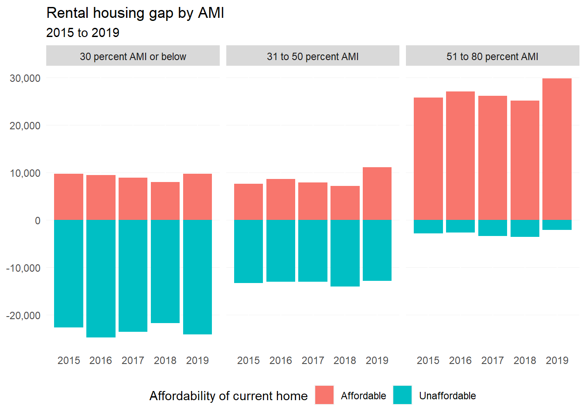
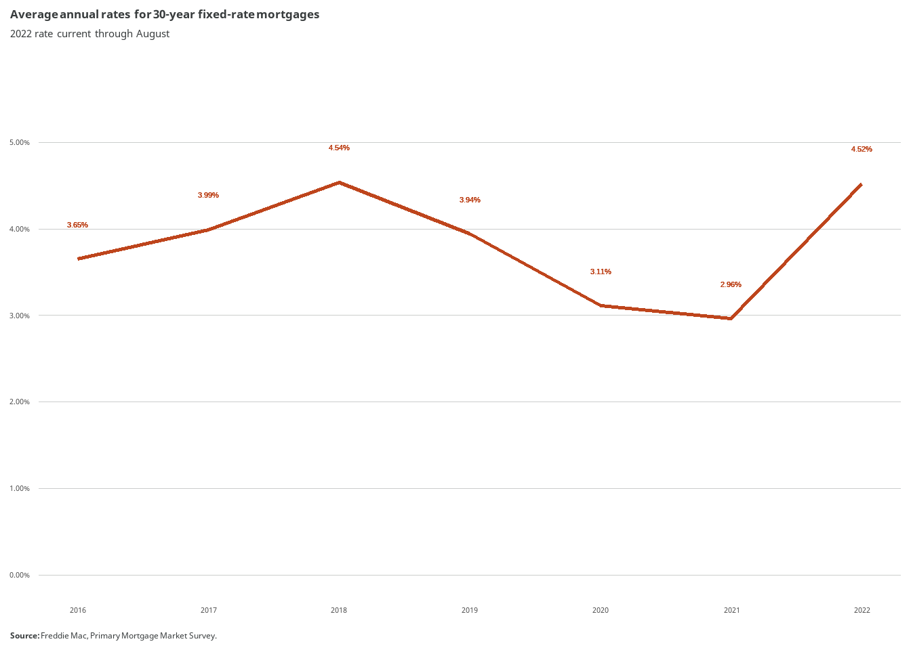
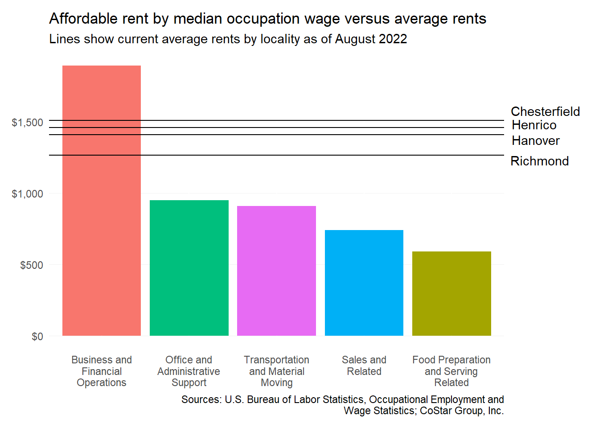
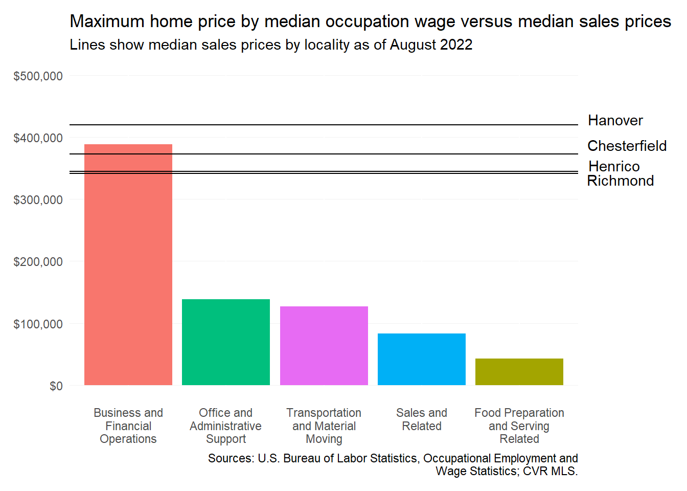

9 Affordability of current housing supply
9.1 Rental housing gap
Comprehensive Housing Affordability Strategy (CHAS) data provided by the Department of Housing and Urban Development (HUD) allows us to understand the cost of housing in relation to household incomes. For renters making less than 80% AMI across the region, there has been little change in the gap in affordable rental housing.

In 2015, there was an overall gap of nearly 40,000 rental homes affordable to households making 80% AMI or less. By 2018, that gap had increased by 354 homes to reach a total gap of 39,860.
Increases in the gap occurred mainly among housing between 31 and 80% AMI, but it is important to note that a gap in housing across all income levels impacts households of any income. This accentuates the need for new affordable housing at all income levels — but especially for 30% AMI or below households. As of 2018, these extremely low-income renters face a shortage of over 22,000 rental homes.
9.2 Incomes versus housing costs
9.2.1 Overview
Housing costs—both for-sale prices and rents—have steadily accelerated in the region since 2016. Every locality say home prices rise more than 50 percent, with average rents not far behind. Average renter incomes also increased from 2016 to 2020, although those gains were not as steady across all localities.
However, there are two other important takeaways:
- Average renter income data is currently only available through 2020, while the sharpest housing price increases occurred from then through 2022.
- Average renter incomes were already below the level necessary to afford the typical apartment or home for sale.
9.2.2 Rental affordability
Market asking rents across the region have been on the incline between 2016. Still, the median incomes for renters in Chesterfield and Henrico—at least from 2016 to 2020—could afford average rents. That was not the case for Henrico and Richmond, where the monthly rental price affordability gaps were $20 and $218, respectively.
In this chapter, an “affordable rent” is no more than 30 percent of a household’s gross monthly income. Any rent amount higher than this level would make the renter cost-burdened.
9.2.3 Homeownership affordability
To determine how affordable homeownership is at the median renter income, we can calculate the maximum home sales price affordable to a buyer with that income. To make these estimates, we make the following simplified assumptions:
- 5 percent down payment
- 1.5 percent in closing costs
- $250 per month for property taxes
- $150 per month for insurance and other costs
For underwriting purposes, we assume that the monthly mortgage payment plus these costs can not exceed 28 percent of the buyer’s gross income. For example, a renter earning $50,000 can afford a monthly housing cost no more than $1,166.67.
To determine the maximum principal amount, and the subsequent sales price, we assume a standard 30-year fixed-rate mortgage using the average annual interest rates published by Freddie Mac1. The 2022 value is the average through August. The figure below shows these interest rates used for the homeowner affordability analysis.

The figure below shows these maximum affordable home sales prices versus actual median sales prices for each locality from 2016 through 2020. Only median sales prices are shown for 2021 and 2022 year-to-date, since renter income estimates from ACS are only available through 2020.
In the three counties, median sales prices were generally just out of reach for the average renter’s income from 2016 through 2019. Then, historically low interest rates in 2020 increased buyers’ purchasing power to put the median-priced home within reach.
The purchase price gap in Richmond, however, has continued—even with lower rates, the average renter could not afford to buy a home more than $200,000 in 2020. By 2021, the median-priced home in the city topped $300,000 for the first time.
9.3 Wage-based affordability
In a previous chapter, the five most common occupation categories in the Richmond MSA were determined from the latest (May 2021) BLS Occupational Employment and Wage Statistics (OEWS) data. These wages are an opportunity to assess the ability of many of the region’s workers to afford rent or purchase a home. Annual salary amounts range from $75,800 for workers in Business and Financial Operations, to $23,650 for those in Food Preparation and Serving Related positions.
9.3.1 Rental affordability
Every occupation except for Business and Financial Operations supports an affordable rent less than $1,000. Apartments in the region for less than this are hard to come by, and average rents across localities are now hundreds of dollars more.

However, these average rents can be relatively attainable if households have two earners with annual salaries each above $30,000. Still, even dual-income households where both workers are in retail and/or restaurant jobs would currently struggle to find an affordable apartment anywhere in the region.
9.3.2 Homeownership affordability
Similarly, all occupation categories other than Business and Financial Operations command wages that make homeownership a challenging goal, especially for single-earner households. Most of these common jobs, on their own, would support only home purchases prices below $140,000. This does not even consider related financial barriers often faced by lower-income workers, such as savings for down payments and acceptable credit scores.

Freddie Mac, 30-Year Fixed-Rate Mortgages Since 1971.↩︎